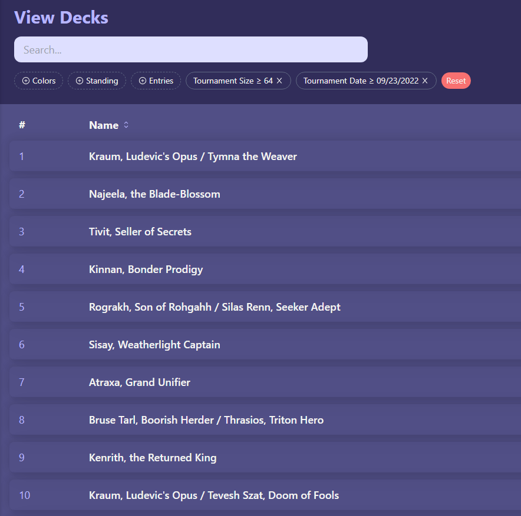
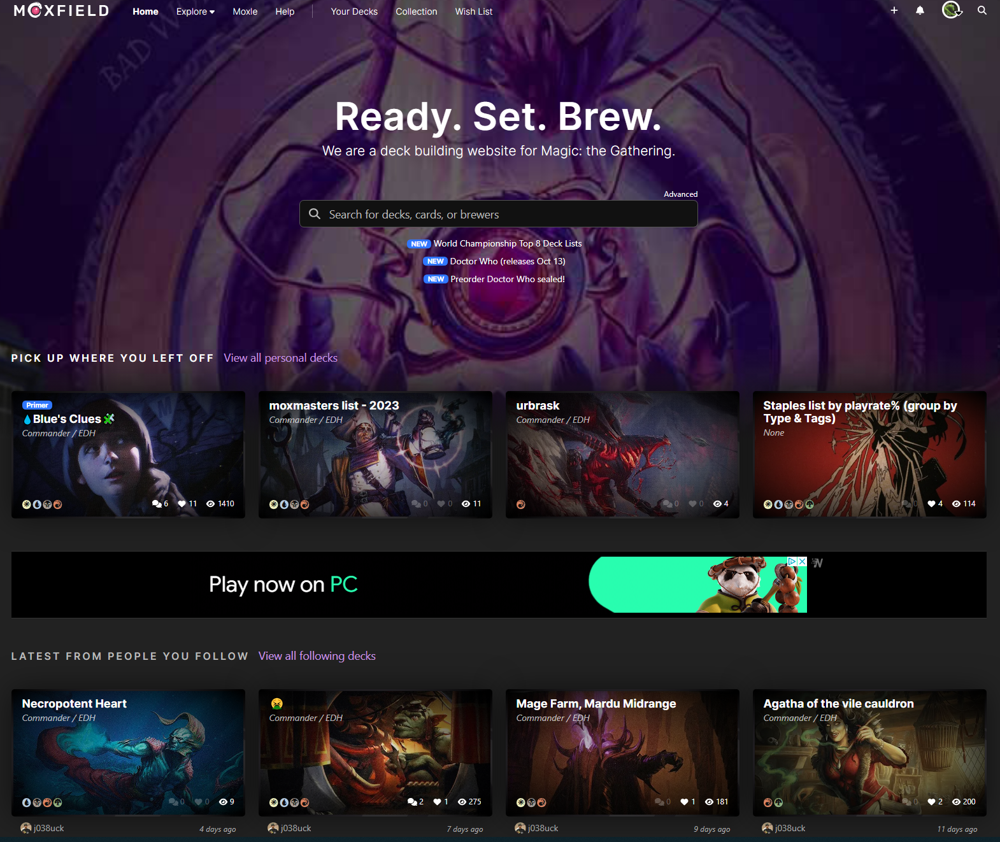

White Space and Visual Flow
Edhtop16
edhtop16.com For data tools it can be fairly easy to bombard your user with information, but they choose to keep everything well spaced out and simple, and this makes it one of the most used platforms for data for my card game.
Fitts law
The search bar on google is compact and concise which is exactly what Fitts law aims for
Visual Hierarchy
moxfield
www.moxfield.com Moxfeild uses visual hierarchy to display things in order of importance, first the search bar, then decks that you last worked on, then what people you follow are working on, then random highly viewed decks. It shows you what you are probably there for first to help them be a better tool for you.